Each pair of shoes is a unique canvas, transformed into wearable art. Explore my custom shoe creations, where fashion meets artistic expression.
Fuchsia Enchanted Garden Couture Heels
Fuchsia Garden — where couture blooms with every step. A celebration of saturated pink, delicate butterflies, sculptural bows and jewel-like details — created to feel somewhere between a secret garden and a piece of wearable fantasy. A fantasy garden reimagined as couture footwear. The Fuchsia Enchanted Garden Couture Heels are an exuberant celebration of femininity, colour and intricate ornamentation. Cut in a vivid jewel-toned fuchsia with an elegant pointed silhouette, the design balances the refinement of a classic pump with the expressive beauty of a one-of-a-kind statement piece. Across the toe, miniature blossoms emerge beside delicate golden detailing and sparkling heart-shaped charms, creating the impression of precious jewellery scattered across the shoe. Translucent pink butterflies appear to have just landed upon the design, their ethereal wings adding movement and softness against the richness of the fuchsia surface. The ankle becomes its own dramatic composition. Generous sculptural bows frame the heel, intertwined with further butterfly embellishments and subtle crystal accents. Fine straps curve gracefully around the ankle, finished with suspended jewel-like details that catch the light with every movement. From the side, the slender high heel creates an elegant, elongated line, while contrasting golden detailing beneath the shoe introduces an unexpected flash of opulence. Even viewed from behind, the design remains unmistakably decorative, transforming every angle into part of the composition. Romantic without being delicate, playful without sacrificing sophistication, these heels are designed for the woman who wants her shoes to become the focal point of the look. More than an accessory, Fuchsia Enchanted Garden is a miniature world of flowers, butterflies, bows and jewels — a piece of wearable fantasy created to make an entrance and remain unforgettable. #CustomShoes #CoutureShoes #LuxuryFootwear #WearableArt #FuchsiaDream
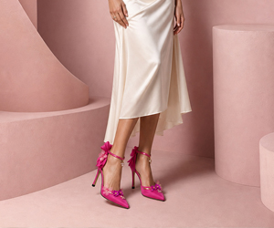
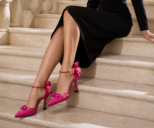
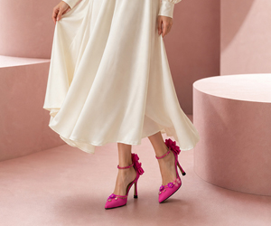
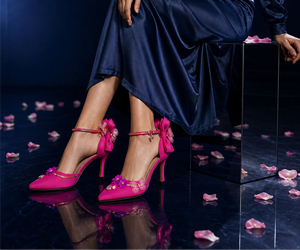
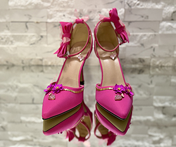
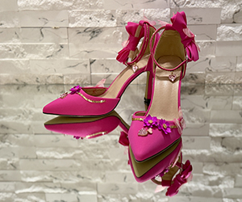
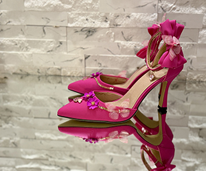
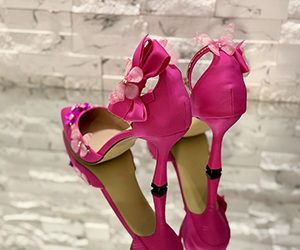
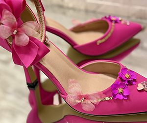
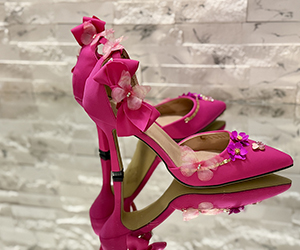
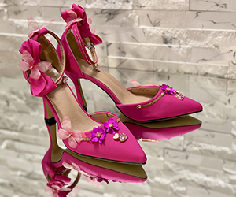
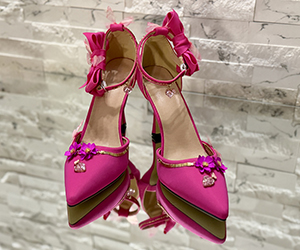
Crimson Reverie — Pearl & Blossom Couture Heels
Crimson Reverie — where velvet, pearls and flowers become couture. A pair created to be noticed: deep crimson velvet, cascading pearls, delicate crystal-like blossoms and sculptural bows come together in a romantic statement of unapologetic glamour. Every angle reveals another detail. A celebration of romance, ornament and dramatic femininity, Crimson Reverie transforms the classic pointed stiletto into a piece of wearable art. Rich crimson velvet envelops the sculptural silhouette, its deep jewel tone creating a sumptuous backdrop for an intricate composition of pearls, flowers and luminous embellishments. Delicate translucent blossoms sweep across the pointed toes like frozen petals, accompanied by fine golden branches and tiny pearl accents that bring an almost jewellery-like delicacy to the design. At the ankle, dramatic velvet bows form the heart of the composition. Cascading strands of ivory pearls soften the architectural lines of the heels, while floral ornaments, crystalline details and ethereal white petals create a sense of movement and abundance. Fine dangling elements complete the design, catching the light as the wearer moves. The contrast between saturated red velvet and luminous ivory embellishments gives Crimson Reverie its distinctive character: opulent yet romantic, theatrical yet meticulously feminine. Designed not simply as footwear but as an object of adornment, these couture heels are made for unforgettable entrances, editorial moments, celebrations and collectors who believe that a shoe can be as expressive as a piece of jewellery. Details: Deep crimson velvet • Pointed-toe silhouette • High stiletto heel • Sculptural velvet bows • Draped pearl embellishments • Translucent floral ornaments • Crystal-inspired accents • Delicate gold-tone details • Statement couture design. #CustomShoes #CoutureHeels #WearableArt #LuxuryShoes #ShoeDesign
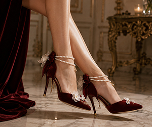
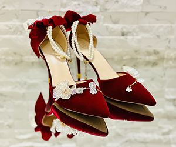
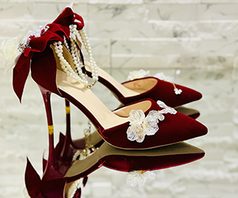
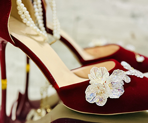
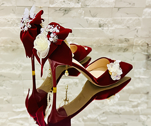
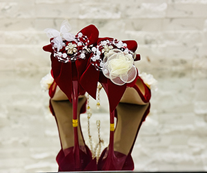
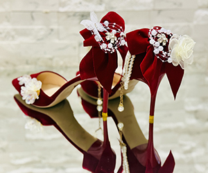
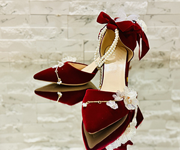
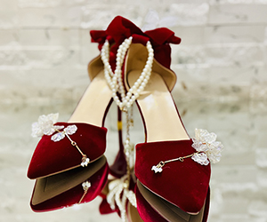
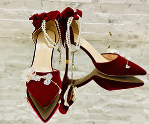
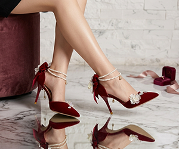
Blush Butterfly Crystal Couture Heels
Where Every Step Blooms in Pink Elegance. Soft blush satin, crystal vine embellishments, delicate butterflies, and flowing ankle ribbons create a design halfway between couture bridal footwear and a fairytale ballet aesthetic. Step into a world where romance meets haute couture. The Blush Butterfly Crystal Couture Heels are handcrafted to capture the elegance of a modern fairytale, combining luminous blush satin with shimmering crystal embellishments arranged in a graceful botanical pattern. Delicate chiffon butterflies rest along the silhouette, while luxurious satin ribbons wrap effortlessly around the ankle, creating a soft, ballet-inspired finish that is both feminine and unforgettable. Every crystal is carefully placed to catch the light from every angle, transforming each step into a moment of quiet brilliance. Designed for brides, couture events, luxury soirées, and unforgettable celebrations, these heels embody timeless sophistication while remaining uniquely artistic. Their refined pointed toe and slender stiletto heel elongate the silhouette, offering graceful elegance without compromising on visual impact. Each pair is individually handcrafted, ensuring exceptional attention to detail and making every creation as unique as the woman who wears it. Features: Handcrafted couture design · Premium blush satin finish · Hand-set pink crystal embellishments · Delicate chiffon butterfly accents · Elegant wrap-around satin ankle ribbons · Classic pointed toe silhouette · Slim stiletto heel for timeless sophistication. More than a pair of shoes, these are wearable couture—created to transform every entrance into a lasting memory. #LuxuryHeels #CustomShoes #BridalFashion #HandcraftedLuxury #PinkAesthetic
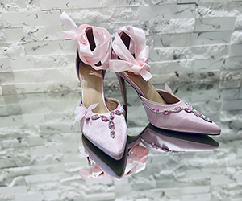
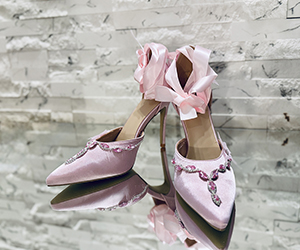
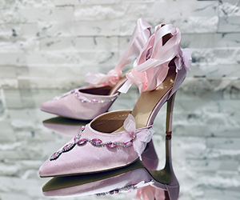
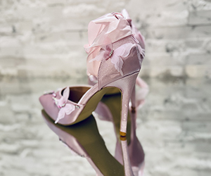
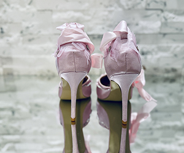
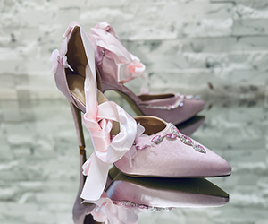
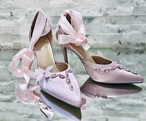
Éclat de Fleur Crystal-Heel Sandals
Éclat de Fleur Crystal-Heel Sandals — Champagne Blossoms in Crystal. I absolutely love them—they feel like wearable couture. The sculptural crystal heels, champagne-gold finish, and layered organza flowers create a beautiful balance between modern glamour and romantic delicacy. A poetic expression of femininity and light, the Éclat de Fleur Crystal-Heel Sandals transform every step into a moment of pure elegance. The luminous champagne-gold silhouette is adorned with hand-sculpted floral embellishments in soft ivory, blush, and warm nude tones. Layers of delicate, translucent petals bloom across the toe and ankle, creating graceful movement and an ethereal, three-dimensional finish. Slender metallic straps frame the foot with refined precision, while subtle crystal detailing introduces a discreet touch of brilliance. The transparent architectural heel forms the centrepiece of the design, revealing intricate golden butterfly accents suspended within its sculptural form. Both delicate and striking, it gives the illusion that the wearer is walking on light. Designed for weddings, evening celebrations, red-carpet occasions, and unforgettable entrances, these statement sandals unite romantic craftsmanship with contemporary luxury. More than footwear, Éclat de Fleur is a miniature garden captured in gold and crystal—a collectible piece of wearable art created for the woman who wishes to leave beauty in her wake. #LuxuryShoes #FloralHeels #CoutureFootwear #CrystalHeels #WearableArt
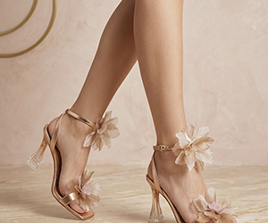
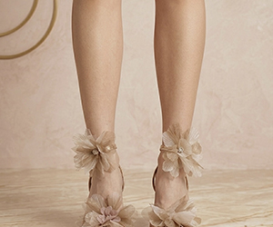
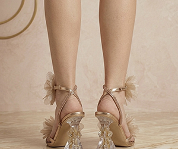
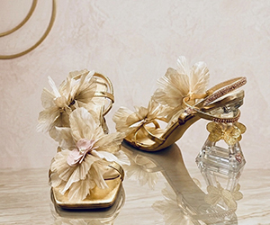
Violet Dream Anime Couture Sneakers
Violet Dream Anime Kicks — hand-painted power, love & mystery in every step. Bold, dreamy, and very artistic: the violet/pink anime-inspired portraits, the painted eyes, the love/power symbols, and the iridescent butterfly laces make them look like wearable pop-art couture. Step into a world of color, emotion, and fantasy with the Violet Dream Anime Couture Sneakers — a one-of-a-kind pair of hand-painted custom shoes created for those who see fashion as art. Built on a sleek black sneaker base, this design transforms the classic low-top silhouette into a vivid visual story, blending anime-inspired portraiture with bold graphic patterns, romantic symbolism, and a striking violet-pink color palette. Each side of the shoes features expressive hand-painted faces, intense illustrated eyes, and dynamic comic-style details that give the pair a powerful, cinematic presence. Shades of deep purple, lavender, magenta, black, and soft pink flow across the surface, creating depth and movement from every angle. The painted eye motifs on the heels add a mysterious, protective feel, while the small heart accents bring a delicate touch of sweetness and emotion. The toe boxes are decorated with layered scale-like patterns and sharp graphic strokes, giving the sneakers a dramatic, almost armor-like energy. On the sides, Japanese-inspired characters add an extra sense of meaning and visual impact, enhancing the shoes' contemporary streetwear identity. Every brushstroke is carefully placed to make the design feel alive, expressive, and completely unique. The look is completed with luminous iridescent lavender organza laces that shimmer between purple, blue, and green depending on the light. These oversized bow-style laces add a soft, ethereal contrast to the bold hand-painted artwork, turning the sneakers into a true statement piece. Perfect for collectors, anime lovers, streetwear enthusiasts, and anyone who wants to wear something unforgettable, the Violet Dream Anime Couture Sneakers are more than custom shoes — they are wearable art designed to stand out, tell a story, and turn every step into a moment. #CustomShoes #HandPaintedShoes #AnimeStyle #WearableArt #StatementSneakers
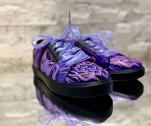
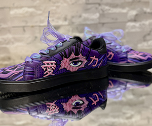
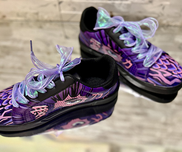
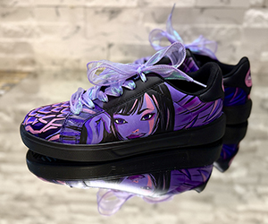
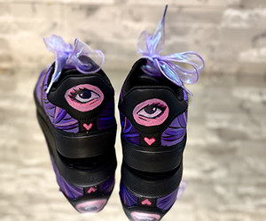
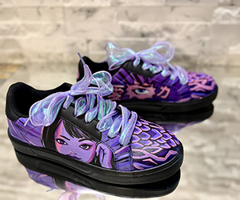
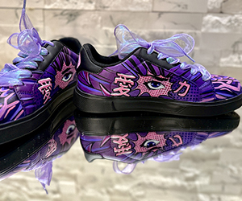
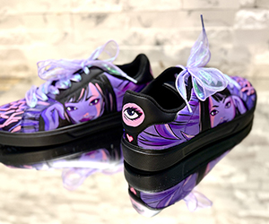
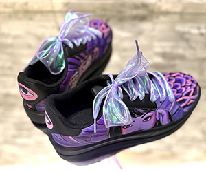
Scarlet Bloom Couture Stiletto Sandals
Scarlet Bloom Couture Stiletto Sandals — A Love Letter in Red. Dramatic, romantic, and very couture—the vivid red, sheer organza flowers, delicate gold details, and reflective styling make them feel like a luxury statement piece made for a special evening. The Scarlet Bloom Couture Stiletto Sandals are a passionate celebration of femininity, elegance, and artistic craftsmanship. Designed in a bold, radiant red, these custom heels command attention with every detail — from the sleek stiletto silhouette to the soft sculptural floral accents that bloom gracefully around the ankle and heel. Sheer organza petals create a sense of movement and romance, giving the shoes an airy, almost theatrical presence. Across the front straps, delicate golden vine embellishments and deep red floral accents add a refined jewelry-like finish, while dangling charms bring subtle sparkle and movement with each step. The high heel and open sandal shape create a graceful, elongated silhouette, balanced by soft textures and couture-inspired decoration. Perfect for special occasions, romantic evenings, fashion editorials, bridal looks, performances, or statement luxury styling, these heels are made for someone who wants to be unforgettable. Every element feels expressive and intentional — bold red passion, golden elegance, floral softness, and handcrafted drama combined into one unique wearable artwork. The Scarlet Bloom Couture Stiletto Sandals are not simply shoes; they are a statement of confidence, romance, and high-fashion individuality. #customheels #redheels #luxuryshoes #couturefashion #handmadeheels
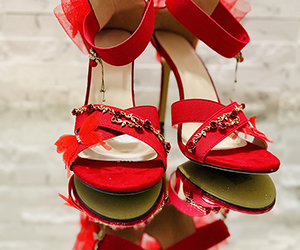
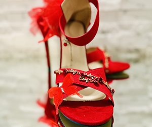
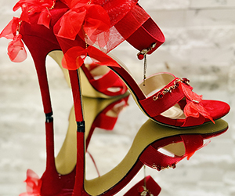
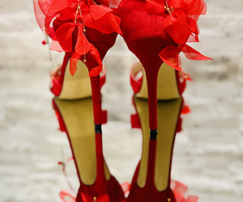
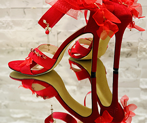
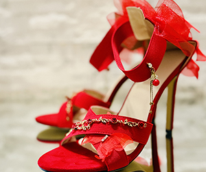
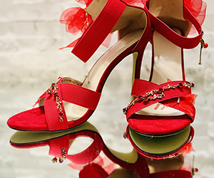
Silver Butterfly Dreams Couture Heels
Silver Butterfly Dreams Couture Heels — Couture Heels Made to Sparkle. Icy, ethereal, bridal, and couture, with a beautiful mix of crystal sparkle, silver satin, delicate ribbons, and butterfly wings—they look like luxury fantasy heels made for a bride, a gala, or a magical editorial photoshoot. These exquisite silver heels feature a luminous satin-like finish, delicate ankle ribbons, and a dazzling crystal-embellished front strap that catches the light from every angle. The highlight of the design is the ethereal butterfly decoration at the back of each heel, crafted with soft feather-like textures, shimmering sequins, and delicate wing details that create a dreamy, fairytale-inspired silhouette. The slim silver stiletto enhances the feminine shape while flowing satin ribbons wrap gracefully around the ankle for a refined finish. Perfect for weddings, luxury events, evening occasions, photoshoots, and any moment where you want to feel truly extraordinary. #CustomHeels #ButterflyShoes #LuxuryFootwear #BridalHeels #HandmadeCouture
Golden Bloom Couture Sandals
Golden Bloom Couture Heels — Where Romance Meets Royal Luxury. They look extremely luxurious and romantic, with that gold sculpted texture, delicate metallic floral details, and the soft champagne bows at the back. They feel like couture evening sandals made for a bride, a gala, or a dramatic editorial look. Designed in a radiant metallic gold finish, these custom high-heel sandals feature a refined ankle-strap silhouette, a delicate open-toe shape, and a shimmering textured surface that catches the light with every step. Sculptural floral embellishments bring a jewelry-like quality to the front strap, while warm rose-gold heart accents and oversized champagne organza bows at the back create an ethereal contrast against the polished gold structure. Perfect for bridal celebrations, luxury parties, evening events, photoshoots, and red-carpet-inspired moments. #GoldenHeels #LuxuryShoes #CustomHeels #CoutureFashion #StatementShoes
Celestia Blue Butterfly Heels
Celestia Blue Butterfly Heels — step into a dream with these custom high heels crafted in a luminous ice-blue glossy finish. Ethereal blue butterflies, shimmering silver chains, crystal-like accents, and ornate jewel embellishments cascade across the pointed toe and side silhouette; a regal vintage-inspired centerpiece and translucent butterfly charms add movement and sparkle with every step. Soft satin bows at the back balance the dramatic stiletto with delicate couture charm, while the ankle strap refines the silhouette. Perfect for bridal moments, luxury photoshoots, fantasy fashion styling, special events, or collectors of wearable art. #CelestiaBlueButterflyHeels #CustomHeels #BridalHeels #FantasyFashion #LuxuryFootwear
Pearl Champagne Butterfly Veil Heels
Pearl Champagne Butterfly Veil Heels — an ornate statement pair for bridal moments, luxury evening wear, and fairycore styling. These elegant pearl-champagne pointed-toe high heels combine rhinestone ankle and cross straps with translucent shell- and petal-like ornaments across the vamp, small blue crystal heart charms, and butterfly-chain details at the back. Every element reads as couture craft: romantic, luminous, and impossible to miss. Ideal for weddings, galas, editorial shoots, and anyone who wants footwear that feels like wearable sculpture. #CustomHeels #BridalHeels #StatementHeels #Fairycore #LuxuryFootwear
Crimson Bloom Heels
Introducing Crimson Bloom Heels, a handcrafted statement pair designed for elegance, confidence, and unforgettable entrances. These vivid red heels combine soft, luxurious textures with delicate pearl strands, floral embellishments, satin bows, and subtle gold accents for a romantic yet dramatic finish. The layered straps frame the foot beautifully, while the bold heel silhouette adds height, poise, and sophistication. Perfect for special occasions, fashion editorials, artistic styling, or anyone who wants their shoes to feel like wearable art. #CrimsonBloomHeels #CustomShoes #StatementHeels #PearlDetails #RomanticFashion
Sapphire Bloom Crystal Heels
Blue Moon Princess Heels — step into elegance with the Sapphire Bloom Crystal Heels, a breathtaking pair of custom shoes designed to turn every entrance into a moment. Wrapped in a rich royal blue finish, these heels combine romantic femininity with statement luxury, creating a design that feels both regal and unforgettable. The silhouette is elevated by delicate crystal-embellished straps that wrap gracefully around the foot, adding sparkle from every angle. Jeweled floral elements and hanging heart-shaped charms bring refined, decorative brilliance, while soft satin-inspired petal detailing across the toe adds texture and an artisanal couture touch. At the back, oversized ribbon bows create a dramatic and graceful finish, making the design feel whimsical, elegant, and strikingly original. These custom heels are made for special occasions, celebrations, photoshoots, evening events, and anyone who wants footwear that feels like wearable art. They are bold without losing softness, glamorous without feeling excessive, and distinctive enough to stand out instantly. The Sapphire Bloom Crystal Heels are more than shoes — they are a statement of confidence, beauty, and imagination. Designed for those who love expressive fashion and unforgettable details, this pair brings together sparkle, romance, and royal blue sophistication in one truly enchanting creation. #CustomHeels #BlueHeels #HandmadeShoes #StatementHeels #LuxuryFootwear
Midnight Poetry
Handwritten custom sneakers that blend minimalism, emotion, and wearable art into one striking design. Built on a sleek matte-black base, the shoes are covered in flowing white handwritten script that wraps across the sides, toe, and sole, creating the feeling of poetry in motion. Every line adds depth and personality, turning a classic silhouette into a statement piece that feels both modern and deeply expressive. The contrast between the bold black surface and the soft white lettering gives these shoes a refined yet dramatic presence. Delicate heart details and beautifully patterned black-and-white laces complete the look, adding a touch of charm and individuality. The result is a pair that feels artistic, mysterious, and effortlessly stylish from every angle. Perfect for those who love fashion with meaning, these custom shoes are more than footwear—they are a form of self-expression. They pair beautifully with casual streetwear, monochrome outfits, or elevated everyday looks, making them ideal for anyone who wants to stand out with something unique, elegant, and handcrafted. Each pair carries a one-of-a-kind visual rhythm, designed to feel personal, memorable, and impossible to ignore.
Sunset Dreams
Custom hand-painted platform sneakers—a vibrant celebration of color, creativity, and individuality. A smooth gradient blend of warm peach, pink, violet, and bright blue captures a sunset sky in bold, wearable form. Delicate golden ornamental details flow across the surface, adding movement, elegance, and a touch of magic. Contrasting purple patterned laces add personality; a crisp white platform sole gives a modern finish that lets the artwork shine. Small heart accents on the back add playful charm. Each pair is carefully hand-painted, so no two are exactly alike—ideal for statement fashion, artistic accessories, and one-of-a-kind pieces that turn everyday outfits into something unforgettable. Comfort, creativity, and handcrafted artistry in one striking design—wearable art for every step.
Emerald Dragon
Custom-painted sneakers with a powerful dragon-inspired design that transforms a classic low-top silhouette into wearable artwork. The entire upper is wrapped in a richly detailed scale pattern, hand-painted in layered shades of emerald green, deep forest green, and golden yellow—depth, movement, and a lifelike reptilian texture. Every scale is individually outlined for a dimensional, armored look. A hand-painted dragon stretches across the side panels and flows onto the midsole: serpentine body, wings with motion, tail wrapping heel to toe for one unified scene. The toe box features an ornamental dragon emblem in swirling green, gold, and black; white panels beneath the artwork add crisp contrast. The palette blends vibrant greens, moss tones, yellow accents, and clean white with small golden details; bright yellow laces add energy. A subtle heart detail on the heel softens the fierce fantasy aesthetic with a personal touch. Set on a chunky white sole for structure and contrast, every angle is customized—no plain side. Ideal for lovers of fantasy art, dragons, statement fashion, and one-of-a-kind custom footwear—handcrafted art to stand out and bring bold mythical energy into everyday style.


Butterfly Garden
Stunning custom pointed-toe stilettos in a rich deep berry or burgundy tone with a velvety suede-like finish—romantic, theatrical, and highly imaginative. The silhouette is elegant and sharp: slim high heels, refined pointed front, and graceful ankle straps that frame the foot beautifully. Delicate mesh panels combined with curved strap detailing across the sides create a light, airy effect while keeping the design sophisticated and polished. The centerpiece is the butterfly embellishment: multicolored butterflies in lavender, violet, sky blue, mint green, blush pink, and warm orange flutter across the toe box, ankle area, sides, and heel counter, making the design feel alive. The contrast between the dark wine-colored base and the bright, dreamy butterfly tones gives a fantasy-garden feel—like a couture fairytale or enchanted spring collection. From the back, a clean zipper closure keeps the shape neat and fitted; from the side, the arch and heel look graceful and feminine, while the butterflies soften the stiletto with something playful and poetic. Wearable art for someone who wants to make a statement and embrace beauty in a bold, creative way—original, expressive, and unmistakably one-of-a-kind.


Emerald Romance
Custom emerald green high-heeled sandals with a romantic, fantasy-inspired design—theatrical, elegant, and unmistakably handmade. Slim stiletto sandals with an open toe, broad vamp strap, and mostly open sides create a light, delicate silhouette; the tall, narrow heel gives a lifted, refined look. The upper is a rich emerald satin or velvety fabric with glossy satin ribbons that catch the light. The ankle and heel treatment is the dramatic focus: sculptural heel counters from which long emerald satin ribbons spill into oversized bows and rosette-like knots, with trailing ends for movement and a couture, ballet-meets-fairy-tale quality. The front is decorated with butterfly-like jeweled embellishments, clustered beadwork resembling leaves or botanical bursts, and coordinated jeweled clusters—adding sparkle and a nature-inspired theme. Jewel-toned emerald green shifts from deep and velvety to bright and reflective. Wearable art for photoshoots, special events, fantasy editorials, themed bridal styling, or collectors of one-of-a-kind fashion.


Emerald Enchantment
Highly ornate, fantasy-inspired pointed-toe stiletto heels with a dramatic, handcrafted look. The base is deep emerald or blackened green satin with a subtle sheen; the silhouette is elegant and sharp: closed pointed toe, d’Orsay-style side cut, and slim high stiletto heel, with a thin ankle strap and round gold buckle. The toe box has a small sculptural green satin bow or flower-like ribbon; along the outer edge, gold vine-like trim set with tiny green beads or crystal-like stones runs like jeweled ivy. The heel counters are decorated with gold floral metalwork, leaf motifs, and small flower clusters, topped with a large oval green gem. Multiple green feathers hang from the back and sides for motion and a theatrical, nature-inspired feel; fine gold chains connect the jewel and floral elements for a jewelry-like finish. A blend of couture evening wear, enchanted forest fairy aesthetic, botanical jewelry design, and bridal or costume statement footwear—opulent, magical, almost elven art shoes for a special event, photoshoot, or themed bridal look.


Moonlight Elegance
Custom high-heeled knee-high boots transformed into a dramatic, fantasy couture piece with strong magical-girl and celestial elegance—Guardian of the Midnight Prism. Crafted in deep midnight-blue with a subtle satin-leather sheen that catches the light for a moonlit glow; sleek pointed toe and ultra-slim stiletto heels create a sharp, elegant silhouette that feels both powerful and delicate. Hand-applied embellishments: intricate floral embroidery in beads, sequins, and textured appliqués spreads like enchanted vines along the shaft. Dark blue crystals and jewel clusters frame the toe; soft light-blue ribbons and lace bows around the upper calf add contrast and magical transformation aesthetics. Ornate gold bow ornaments at the back, pale gold interior sole, and dangling crystal details and chains give movement and luxury. Fantasy couture, magical-girl inspired, romantic yet powerful—handcrafted statement footwear.


Fairy Spring
Ornate, fantasy-inspired custom high-heeled boots that blend couture fashion with a fairy-garden aesthetic. Crafted in deep emerald green with a glossy crocodile-texture finish for a luxurious, mystical look; sleek pointed toe and very high stiletto heels create an elegant, dramatic silhouette. The surface is richly decorated with hand-applied floral elements—layered green fabric flowers, sparkling crystals, beads, and jewel embellishments arranged like blooming vines climbing along the boot. Gold chains and delicate leaf ornaments drape across the upper section; oversized satin bows cascade down the back of the shaft. Sculpted roses and pearl accents near the heel and ankle, with metallic leaf details on the pointed toe, complete the nature-inspired design. Wearable art fusing botanical fantasy, haute couture craftsmanship, and springtime enchantment.


Splatter Street
Custom athletic-style sneakers with a bold splatter-paint aesthetic, combining sporty structure with expressive, street-art inspired decoration. The base palette of black, white, and bright red creates a strong, high-contrast look. Red and black paint splatters applied across panels give a dynamic graffiti or abstract action-painting vibe, with layered splashes suggesting intentional artistic composition. Low-profile athletic sneakers with a sleek, performance-oriented silhouette; white cushioned sole and streamlined tongue enhance the modern design. Bold, edgy, and expressive—a statement sneaker for casual wear, creative environments, or fashion-forward styling where action painting meets urban streetwear.


Gothic Romance
Custom couture-style black knee-high boots with a dramatic gothic-romantic aesthetic. Tall knee-high boots with slim, elegant shafts feature pointed toes and high stiletto heels. The design combines intricate black lace fabric layered over matte leather, floral appliqués with butterfly/flower-like shapes, decorative gold-toned chains and medallion elements, hanging feather charms, and long black satin ribbon bows. This theatrical, artistic statement footwear showcases Victorian-inspired couture elegance with a fashion-forward, gothic elegance that transcends everyday boots.


Garden of Lace
Elegant black dress shoes with refined decorative embellishments. Featuring romantic floral appliqués, delicate bow accents, and intricate lace overlays that create a vintage-inspired, couture aesthetic perfect for formal occasions and evening wear.


Gothic Couture
Custom high-heel boots with a dramatic, couture-style aesthetic. Featuring intricate lace and embroidered overlays with floral patterns, draped chain strands with bead-like drops and a striking red gem accent, elegant satin ribbon bow details, and layered fabric flowers. This gothic-elegant design combines romantic lace, jewelry-like embellishments, and a dramatic silhouette, creating a statement fashion piece that showcases handcrafted artistry.


Emoji Express
Fun, youthful streetwear-inspired sneakers featuring colorful emoji-themed decorations. The dark base showcases vibrant smiley-face graphics in neon colors—yellow, pink, blue, orange, and green—with a mix of printed designs and raised plastic emoji charms. A prominent yellow winking tongue-out emoji charm serves as the main focal point, while a red strip along the sole edge and light-colored laces complete this playful, pop culture-inspired design.


Painted Canvas
Hand-painted custom sneakers with a strong artistic, painterly aesthetic—wearable artwork that combines streetwear with fine-art painting. The shoe upper features expressive brush-stroke painting with vivid colors (blues, oranges, yellows, reds, and greens) that blend dynamically, creating a canvas-painting effect. A stylized winged figure or abstract character on the side panel suggests a narrative artistic theme, while rhinestone-like elements on the laces and a hand-painted heart symbol on the back add personal, customized touches to this art-driven design.


Strength & Style
Custom white sneakers featuring hand-painted fitness-themed illustrations. Clean white low-top sneakers with a minimalist silhouette showcase a muscular torso illustration lifting dumbbells, rendered in a semi-realistic painted style. Soft gray cloud-like brushwork surrounds the figure, creating a dramatic, stylized background that emphasizes strength, bodybuilding, and gym culture. The white laces and thick white sole keep the overall look simple so the artwork stands out, creating a personalized, sporty artistic design that combines casual footwear with illustrative art.


Portrait & Abstract
Hand-painted custom sneakers designed as wearable artwork, combining illustrative portrait art with abstract color composition. One shoe features a stylized female face with blue hair painted in an expressive, semi-illustrative style, while the other showcases bold flowing color bands in reds, oranges, and yellows set against deep blue. Rich cobalt/indigo blues with paint splatter effects create a night-sky or cosmic background, while light turquoise edging and sparkly rhinestone-like laces add fashion-glam accents that contrast beautifully with the painterly art style.